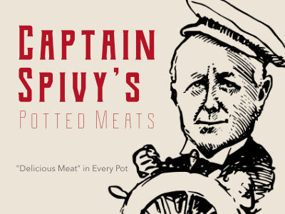
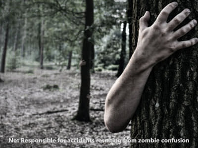
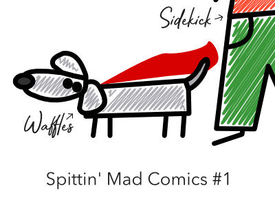

From canned meat to canned cheese, from gags to comics featuring your favorite drill sergeants and higher ups, the Unofficial Commissary has it all!
Products
Captain Spivy's Potted Meats*
All-natural meat subsitute. It tastes almost like meat!
*Legal notice: classification of "meat" has not been evaluated by the FDA or any descendant organization.
Cheesy Cheese, Cheese-Flavored Spread
Mmmmm-mmmmh tatsy! Plus, it's safe for the lactose intolerant. Contains no Milk!
Fake Contagion
Scare your friends and bunkmates with this fake zombie contagion. Causes gray skin and moaning, but no actual zombieness. Great for parties and staff meetings!
Spittin' Mad Comics
You'll laugh, scream, and cry at the insane adventures of Waffles the super dog and his sidekick Sergeant Samuel "Spittin' Mad" McGee himself.